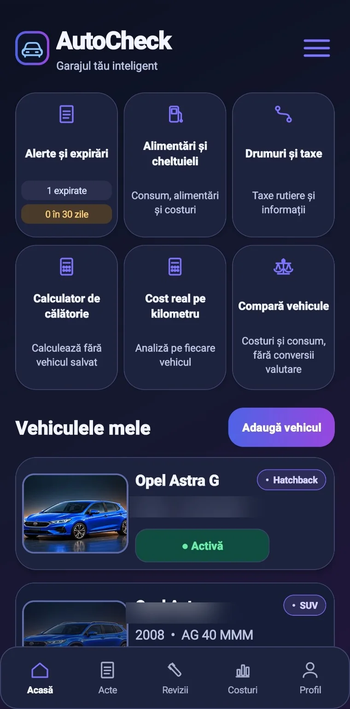
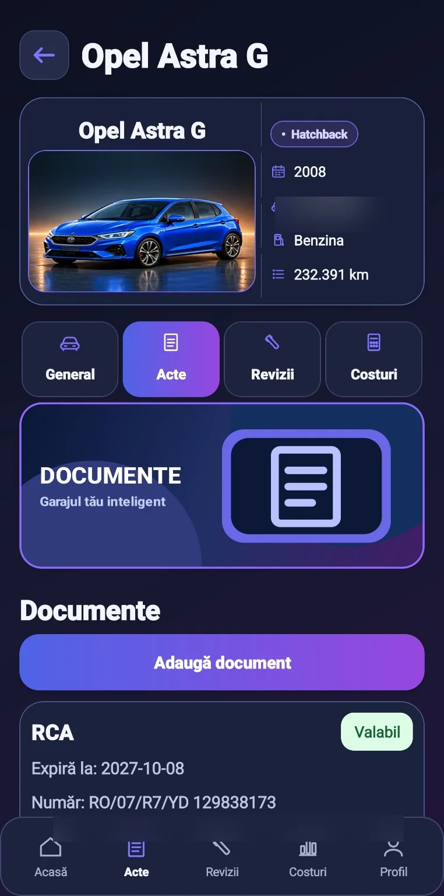
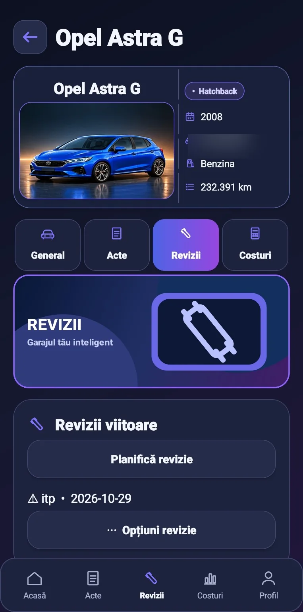
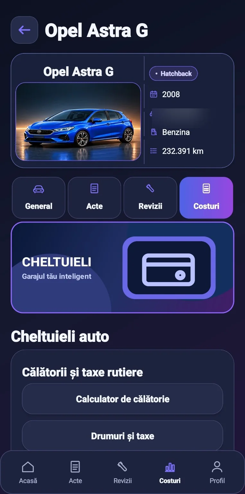
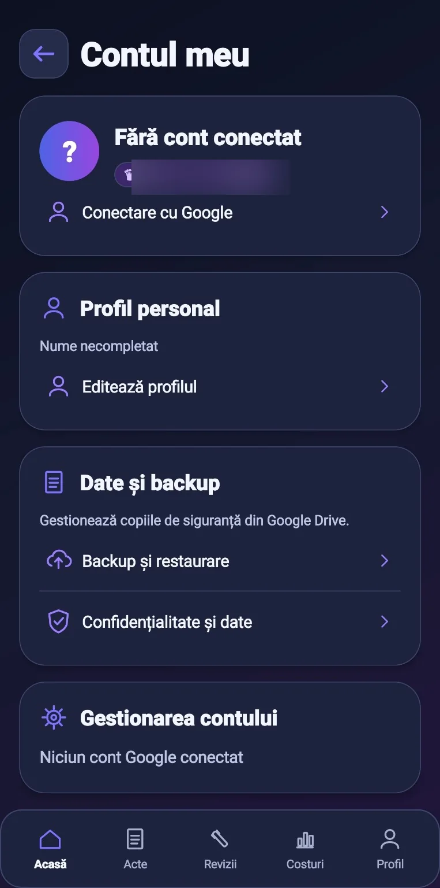

Vehicule
Datele mașinilor tale, organizate într-un singur loc.
APLICAȚIE ANDROID · ÎN TESTARE
Organizează vehiculele, documentele, reviziile și cheltuielile într-o aplicație construită pentru șoferi.
În testare · Nu este încă disponibilă public
AUTOCHECK
AutoCheck reunește informațiile esențiale despre mașină într-o interfață ușor de folosit.
AUTOCHECK
Datele mașinilor tale, organizate într-un singur loc.
RCA, ITP, rovinietă și alte documente importante.
Istoricul operațiunilor de service și întreținere.
Înregistrează și urmărește cheltuielile asociate vehiculului.
Import asistat prin recunoașterea textului (OCR), unde este disponibil.
Administrarea profilului și opțiunile de backup disponibile în aplicație.
Capturi reale din aplicația AutoCheck. Informațiile personale sunt mascate.

Acasă
Acte
Revizii
Costuri
ProfilAceleași funcții, cu limite diferite pentru numărul de vehicule. Plățile vor fi disponibile exclusiv prin Google Play după lansare.
1 autovehicul
Ce include planul
Până la 5 autovehicule
Ce include planul
Până la 10 autovehicule
Ce include planul
La prima activare anuală cu reînnoire automată: o lună bonus. Reînnoirile ulterioare sunt de 12 luni.
Informațiile despre abonamente sunt orientative până la configurarea finală în Google Play.
Nu încă. Aplicația se află în testare. Vom anunța aici disponibilitatea publică.
Funcțiile sunt aceleași; diferă numărul maxim de vehicule: 1, 5, respectiv 10.
Nu. Abonamentele vor fi achiziționate exclusiv prin Google Play, după lansare.
Este prevăzută doar la prima activare a abonamentului anual cu reînnoire automată. La reînnoire, perioada este de 12 luni.
Aici vom publica modificările versiunilor lansate. Nu afișăm versiuni sau date de lansare neconfirmate.
În curând